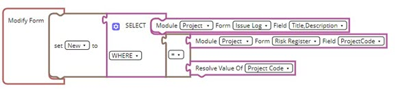
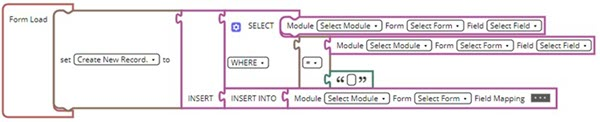
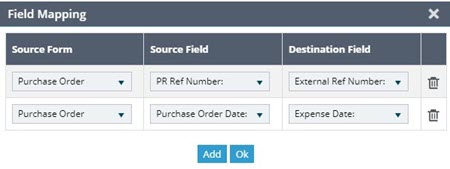
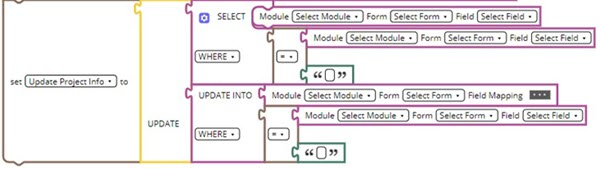

Read Data
The Read Data block enables you to get information from any form in Mind. You can configure the source form from where the information must be retrieved and specify the destination form to which the information must be updated. All blocks under Read Data block must be connected to a variable.
Select Block

- Module: The name of the module.
- Form: The name of the form in the selected module.
- Select Field: The name of the fields in the selected form. It is a multi-select drop-down list and the information from all the specified fields is selected.
-
Group By:
The GROUP BY block enables you to group the information that is retrieved using the SELECT block by a common parameter. You can choose the appropriate module and drag and drop the GROUP BY block to connect it with the WHERE block.
Once this is done, you can specify the appropriate values in the Module, Form and Field entities where the data must be grouped together.
-
Order By:
The ORDER BY block enables you to sort the resulting data set in a specific order. For example, ascending, alphabetical, and so on.
- Input – In the Module, Form, and Select Field entities, you can enter the values that act as input from which the records must be filtered. It can be based on a project or a field which has reference to a record.
- Output – The output is the Resolver value that is entered after the operand and is equated with respect to the input. It can be either a hard-coded text value where you can enter a text or can use a resolver from the Fields drop-down list, or you can specify the module selector.
Insert Block

The first part of the INSERT block is the select statement that you can configure in the same way as the SELECT block. For information on configuring the SELECT block, refer to Select Block.

You can select the fields from the Source Form and Source Field that is defined in the select block and Destination Field to which this information must be mapped.
Update Block

The first part of the UPDATE block is the select statement that you can configure in the same way as the SELECT block. For information on configuring the SELECT block, refer to Select Block.
The second part of the UPDATE INTO block is the WHERE block that enables you to specify the filtering conditions. The WHERE block is configured in the same way as the SELECT block. For information on configuring the WHERE block, refer to Select Block.